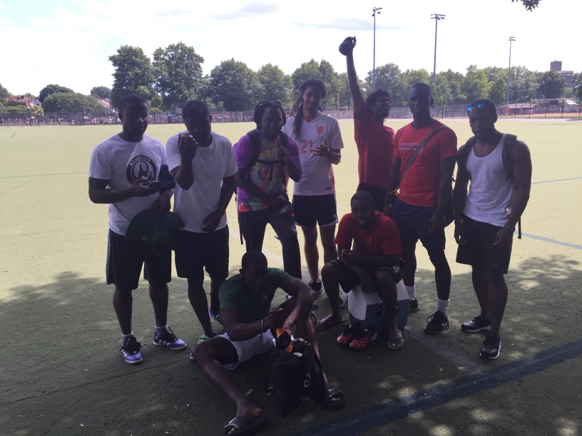
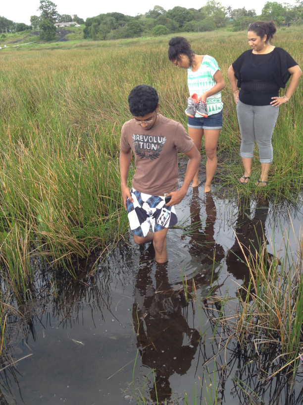
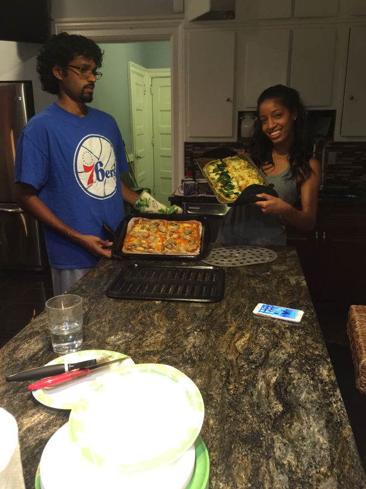
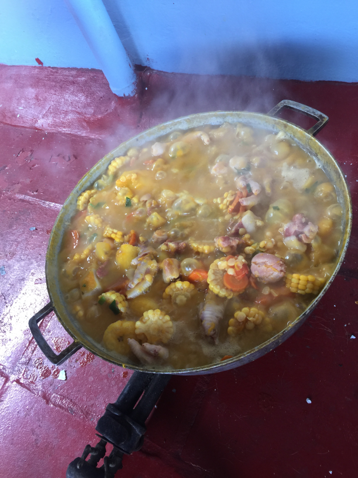

Clifton Thomas
FOLLOWING
2011 MONTHLY LISTENERS
LATEST RELEASE

Cover letter with controls for your rewinding pleasure
'RECORDS' OF INTERESTS
- 
- 
- 
- 
FOLLOWING
2011 MONTHLY LISTENERS
Cover letter with controls for your rewinding pleasure
Sure I've done my fair share dabbling in the fun of the start-up world but as the above pics show, I surely have some diverse interests. I am a huge sports fan both on and off the field. I've played soccer for my college and still play in leagues across NYC. Above are a couple pics of me and the guys ready for action! Did I mention I collect team jerseys lol #Fanatic.
I am am avid hiker. We are talking about spending days in the forest camping, hiking and eating anything wild that's not poison. We have had many a 'bush' party using my Bose speaker with Spotify blasting. Those pics are some of the more tame hikes I've been on. Yea we go hard, but I'm no Bear Grylls.
One of my other joys is cooking! Cooking soothes me as it sends me back to the days in the Caribbean where we go to the beach with a portable stove to cook some food and relax #IslandVibes. As you can see my fiance and I make homemade pizza a lot and yes we are saving up for a brick oven in our back yard. You're invited lol.
All in all I'm a people person so even if I don't get into the tribe, we can be friends or meetup buddies. Cheers!